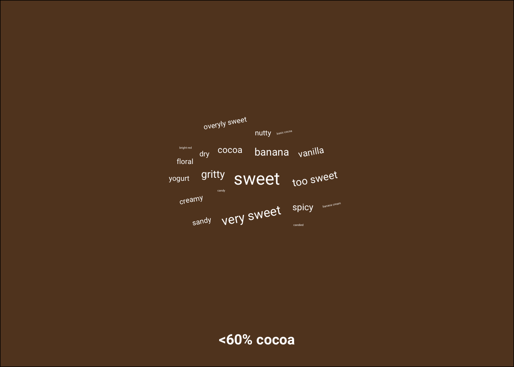

Week 3
The data for Week 3 of 2022 are about chocolate.
Data
The data this week comes from Flavors of Cacao by way of Georgios and Kelsey.
First load the package after installing it if needed.
if(!require("tidyverse")){install.packages("tidyverse")}
library(tidyverse)
if(!require("patchwork")){install.packages("patchwork")}
library(patchwork)
if(!require("ggwordcloud")){install.packages("ggwordcloud")}
library("ggwordcloud")Load data from the github repo.
# read data
chocolate <- readr::read_csv('https://raw.githubusercontent.com/rfordatascience/tidytuesday/master/data/2022/2022-01-18/chocolate.csv')## Rows: 2530 Columns: 10## ── Column specification ─────────────────────────────────────────────────────────────────────────────────────
## Delimiter: ","
## chr (7): company_manufacturer, company_location, country_of_bean_origin, specific_bean_origin_or_bar_name...
## dbl (3): ref, review_date, rating##
## ℹ Use `spec()` to retrieve the full column specification for this data.
## ℹ Specify the column types or set `show_col_types = FALSE` to quiet this message.Data wrangling
# make percentage cocoa a number
chocolate <- chocolate %>%
mutate(cocoa_percent = parse_number(cocoa_percent))
# split the memorable characteristics into individual phrases and make a long data frame (1 line per characteristic)
chocolate_long <- chocolate %>%
mutate(most_memorable_characteristics = str_split(most_memorable_characteristics, pattern = ", ")) %>%
unnest(everything()) %>%
mutate(most_memorable_characteristics = str_split(most_memorable_characteristics, pattern = ",")) %>% # repeat because sometimes no space
unnest(everything())Phrases used to describe chocolate
To start, I will make my first ever wordcloud, showing the most frequent characteristics for the different chocolates in the dataset.
# count number of times a phrase is used
chocolate_sum <- chocolate_long %>%
group_by(most_memorable_characteristics) %>%
count() %>%
arrange(desc(n))
# add random rotation to some words
chocolate_sum <- chocolate_sum %>%
mutate(angle = sample(-90:90,size=1) * sample(c(0, 1), n(), replace = TRUE, prob = c(60, 40)))
# word cloud
p1 <- ggplot(chocolate_sum[1:100,], aes(label = most_memorable_characteristics, size = n, angle = angle)) +
geom_text_wordcloud(family="Roboto", eccentricity = 1, color = "white") +
theme_minimal() +
theme(plot.background = element_rect(fill = "#B19E85"))
p1
Phrases used to describe chocolate by percentage of cocoa
Now, let’s do the same for different percentages of cocoa.
# count number of times a phrase is used
chocolate_sum <- chocolate_long %>%
mutate(cocoa_group = case_when(cocoa_percent<60 ~ "<60% cocoa",
cocoa_percent>59 & cocoa_percent <= 75 ~ "60-75% cocoa",
cocoa_percent>75 & cocoa_percent <= 90 ~ "76-90% cocoa",
cocoa_percent>90 ~ ">90% cocoa"),
cocoa_group = factor(cocoa_group, levels = c("<60% cocoa",
"60-75% cocoa",
"76-90% cocoa",
">90% cocoa"))
) %>%
group_by(cocoa_group, most_memorable_characteristics) %>%
count() %>%
ungroup() %>%
group_by(cocoa_group) %>%
mutate(prop = n/sum(n),
n_group = n()) %>%
slice_max(order_by = n, n = 20, with_ties = FALSE)
# add random rotation to some words
chocolate_sum <- chocolate_sum %>%
mutate(angle = sample(-90:90,size=1) * sample(c(0, 1), n(), replace = TRUE, prob = c(60, 40)))
# word cloud for each facet (do in loop because facet backgrounds cannot be altered individually)
cocoa_colors <- c("#624226", "#49311d", "#312113", "#18100a")
titles = c("", "", "", "Most frequent characteristics of chocolate by amount of cocoa ")
captions = c("", "", "", "Visualization by Jacob Bellmund, licensed under CC BY 4.0.\nData based on: http://flavorsofcacao.com/chocolate_database.html")
p2 <- list()
for (i in 1:length(levels(chocolate_sum$cocoa_group)))
{
i_level <- levels(chocolate_sum$cocoa_group)[i]
p2[[i]] <- ggplot(chocolate_sum %>% filter(cocoa_group == i_level),
aes(label = most_memorable_characteristics,
size = prop, angle = angle)) +
geom_text_wordcloud(family="Roboto", eccentricity = 1, color = "white") +
facet_wrap(~cocoa_group, nrow = 1, strip.position = "bottom") +
labs(caption = captions[i],
title= titles[i]) +
theme_minimal() +
theme(plot.background = element_rect(fill=cocoa_colors[i]),
strip.text = element_text(face = "bold", size = 14, color = "white", family = "Roboto"),
plot.caption = element_text(color = "white", size = 6, family = "Roboto"),
plot.title = element_text(color = "white", face = "bold",
size = 18, family = "Roboto", hjust = 1))
print(p2[[i]])
}Visualization
dsgn <- "ABCD"
p <- p2[[1]] + p2[[2]] + p2[[3]] + p2[[4]] +
plot_layout(design = dsgn, guides = "keep")
pggsave(filename = here("figures", "bellmund_tidytuesday_2022_wk03.png"), plot = p,
width = 8, height = 5.5)Here is the final visualization with the correct aspect ratio: